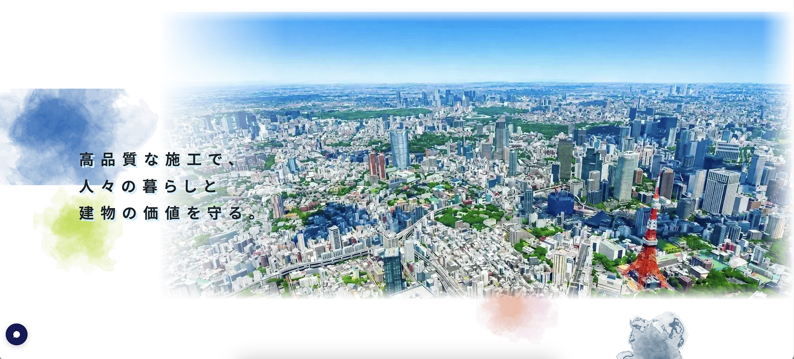
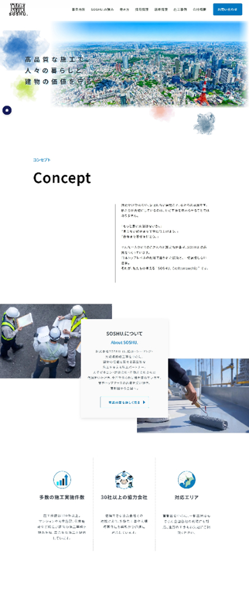
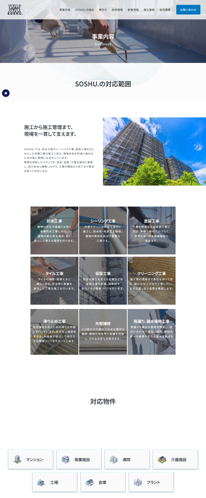
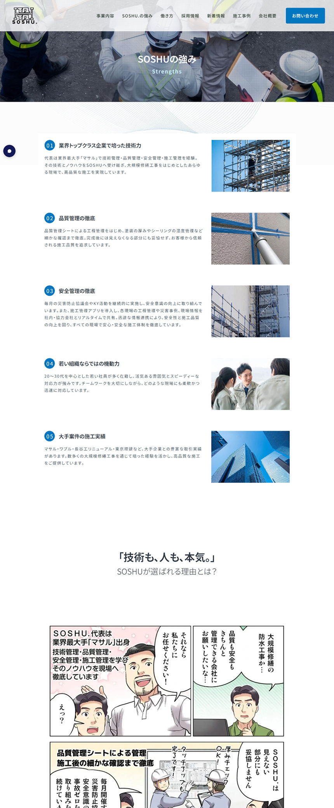
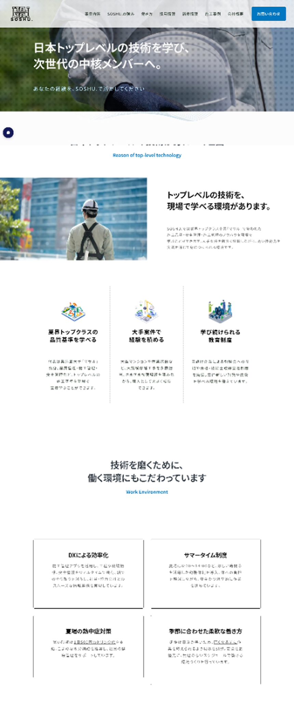

担当範囲
ワイヤーフレーム設計 / デザイン
外注様へコーディング指示
ライティング

ワイヤーフレーム設計 / デザイン
外注様へコーディング指示
ライティング
法人からの新規問い合わせ増加
採用情報の強化
約1ヶ月
Figma / Photoshop
HTML / CSS / JavaScript
今回のサイト制作では、業界トップクラス企業で培われた技術力と、品質・安全・施工を徹底して管理する確かな施工体制を軸に、法人のお客様から「安心して任せられる会社」と感じていただけるサイトを目指しました。同時に、20代・30代を中心とした若い組織ならではの機動力や活気、大手案件を通じてさらに技術を磨ける環境など、働く会社としての魅力もしっかりと発信。経験者が「ここでもっと成長したい」と思える採用サイトとしての役割も持たせています。
業界トップクラスの技術力と品質へのこだわりが伝わるよう、既存サイトのイメージを継承しながら、シンプルで洗練されたデザインに仕上げました。重厚感のある配色と大胆な写真を活かし、施工会社としての「信頼感」や「技術力」を表現。一方で、余白を十分に確保したレイアウトや視認性の高いタイポグラフィを採用することで、若い組織ならではの機動力や成長性、親しみやすさも感じられるデザインを意識しています。
COLOR
#323840#4A555D#83A4CE#EEEEEETYPOGRAPHY
AaNoto Sans JP
可読性の高い書体を採用。




ご代表が業界最大手企業で10年間の現場経験を持ち、技術管理・品質管理・安全管理・施工管理を徹底していることが大きな強み。
今回の採用では、特に防水・シーリング・建設業界の経験者がメインターゲット。そのため「未経験から育てる会社」ではなく、「これまでの経験を活かし、さらに高い技術を身につけられる会社」として訴求。
20代・30代を中心とした若い組織で、社員同士の距離が近く、活気や結束力があることも特徴。サイトでは若さを単なる「若手が多い会社」として見せるのではなく、スピード対応・機動力・柔軟性・これから会社を大きくしていく成長性として表現。